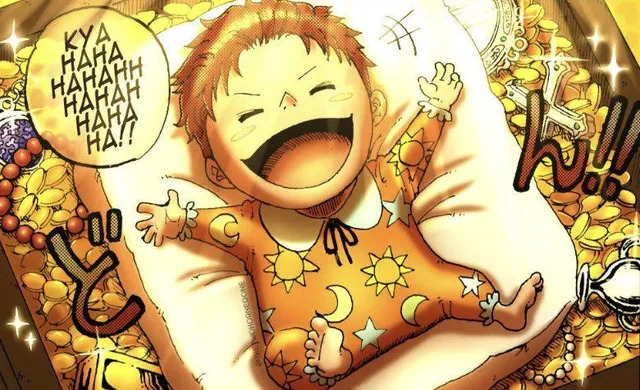

ROGER SE ENCUENTRA A SHANKS EN UN COFRE TRAS EL INCIDENTE DE GOD VALLEY EN DICHA ISLA. EL NIÑO SONRÍE MIENTRAS VE A LA TRIPULACIÓN DE ROGER.
Shanks y Buggy forman parte de la tripulación de Roger.

Shanks y Buggy forman parte de la tripulación de Roger.

Participa en la batalla de Edd War junto a Roger.

Conoce a Teach. Roger parte hacia Laugh Tale sin él.

Conoce a Teach. Roger parte hacia Laugh Tale sin él.
Presencia la ejecución de Roger. Rechaza formar banda con Buggy.

Conoce a Teach. Roger parte hacia Laugh Tale sin él.
Roba la Fruta Gomu Gomu del Gobierno Mundial.

Luffy come la Gomu Gomu. Shanks pierde un brazo. Detiene a Tot Musica.

Es nombrado Yonkō oficialmente.

Conoce a Teach. Roger parte hacia Laugh Tale sin él.
Conoce a Teach. Roger parte hacia Laugh Tale sin él.
Shanks decide ir a por el One Piece tras ver la recompensa de Luffy como Nika.